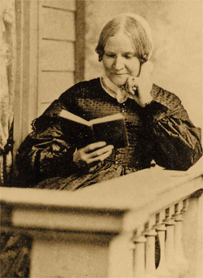
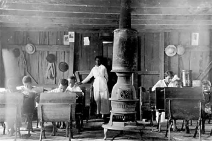
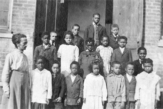
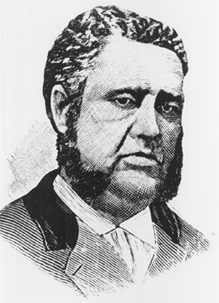
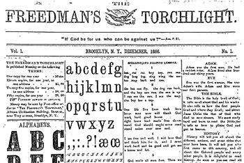

|
Black schoolmistresses who taught contrabands (escaped slaves) and freedmen
during the Civil War rightly considered themselves pioneers. A freedwoman from
Alexandria, Virginia, named Mary Chase established the first day school for
contrabands on September 1, 1861. Later that month, American Missionary
Association (AMA) representative, Lewis C. Lockwood, engaged Mary Peake, an
educated free Black woman already instructing slaves around Hampton, Virginia,
to begin classes behind federal lines near Fortress Monroe. Reverend Lockwood
soon added other free and freed women, followed shortly by a small contingent of
educated Black northerners. Farther south, Charlotte Forten represented the
Pennsylvania Freedman's Relief Association at Port Royal, South Carolina, and
the Union naval commander on St. Simon's Island, Georgia, asked Susie, a
fourteen-year-old refugee secrecy educated in Savannah, to teach the island's
children. Over the next decade, Black educators increased from a mere handful to
more than half the teachers reported by the Freedmen's Bureau. Many were women,
ranging from barely literate ex-slaves to highly cultured graduates of northern
colleges, from obscure monitors and assistants to veteran antislavery crusaders
like Forten, Harriet Jacobs, and Ellen Craft. Often overshadowed by white
teachers and the comparatively high percentage of Black male educators, women of
color nevertheless figured prominently in freedmen's education throughout the
history of the movement.
Born Mary Smith Kelsey at Norfolk Mary Peake had attended a select school
taught by a Black woman in Alexandria and, afterward, a school managed by
whites. During her ten-year stay she obtained a good English education as well
as training in needlework and dressmaking. Back in the Norfolk area Peake sewed
for a living but also proselytized for the First Baptist Church, aided the poor
and sick through her Daughters of Zion, and taught slaves around Hampton until
the Confederates burned the town. In the contraband school, she impressed
Lockwood with her blending of secular and religious instruction. "What an
impression for good would be made upon the rising generation," he urged in a
tract published soon after her premature death, "were this course universally
pursued!" Mary Peake died of tuberculosis on February 22, 1862.
By 1864, the AMA employed at least five Black women from the North in the
Norfolk area and gave partial support to several local people. Blanche Harris,
Clara C. Duncan, and Sara G. Stanley came from Oberlin College, and Mary Watson
was a graduate of the Rhode Island Normal School. Later, when William H.
Woodbury attempted to enlist an all-Black staff in Norfolk, the white
superintendent chose Harris and Duncan and added Sallie L. Daffin and Edmonia
Highgate, who had left a higher-paying position as principal of a Black school
in Binghamton, New York, to be a pioneer in raising freedmen "up to the stature
of manhood and womanhood in 'Christ Jesus'." All considered themselves
particularly well qualified for missionary work among Black southerners. Sara
Stanley, originally from New Bern, North Carolina, had pursued the literary
course of studies et Oberlin College between 1852 and 1854 and taught in
Cleveland. "I myself am a Colored woman," she informed the AMA, "bound to that
ignorant, degraded, long enslaved race, by ties of love and consanguinity: they
are socially and politically 'my people'." However much whites might sympathize
with the former slaves, Sallie Daffin insisted, "none can so fully experience
the strength of their needs, nor understand the means necessary to relieve them
as we who are identified with them'."
Illness and allegations that an all-Black school was necessary because the
races could not work together prematurely ended Woodbury's plan. The teachers
nevertheless continued their extensive relief and educational activities. Even
after heart trouble forced Harris to take what she hoped was a temporary leave
of absence, the principal planned to work for her "benighted and long-oppressed
race" back home in Oberlin. Sallie Daffin replaced another teacher on leave. For
a salary of $15 per month she taught day, evening, and Sunday schools; visited
Black families; aided the sick and wounded; and assisted the teacher at a
hospital across from the mission house.
Between 1861 and 1866, aid societies supported Black teachers in the District
of Columbia, Virginia, Maryland, the Carolinas, Georgia, Kentucky, Louisiana,
and Mississippi. On the South Carolina Sea Islands, Charlotte Forten quickly
dispelled doubts among the plantation women and became one of Port Royal's most
respected teachers. The product of a well-known abolitionist family from
Philadelphia, this sophisticated young mulatto had graduated from grammar and
normal schools in Salem, Massachusetts, and taught in the North before the war.
After receiving assurances that Edward L. Pierce, the lawyer in charge of the
free-labor experiment, did not oppose the use of Black missionaries and
teachers, Forten worked harmoniously with most white colleagues, although she
was critical of superintendents who seemed strongly prejudiced against the
freedmen. She, in direct contrast, appreciated the culture of the Black
islanders. Forten's journal provides an intimate glimpse into her approach. Less
than two months after President Abraham Lincoln issued the Preliminary
Emancipation Proclamation, she wrote, "We ... commenced teaching the children
'John Brown,' which they entered into eagerly. I felt too the full significance
of that song being sung here in S[outh] C[arolina] by little negro children, by
those whom he--the glorious old man--died to save. Miss [Laura] T[owne] told
them about him." Three days later: "Talked to the children about the noble
Toussaint. They listened very attentively. It is well that they should know what
one of their own color could do for his race. I long to inspire them with
courage and ambition (of a noble sort) and high purpose."
While still a student in Massachusetts, Forten shared the common abolitionist
faith that knowledge would break down the barriers of prejudice and oppression.
Freedmen's schools offered an opportunity to prove it. "There is," Sallie Daffin
thought, "abundant evidence of an increasing desire on the part of our people to
become educated; and I hesitate not to affirm that if we have the same
advantages afforded us as the whites, we will convince those who deny the fact
that we are inferior to none."
White abolitionist Lydia Maria Child included selections from Forten and
Harriet Jacobs in The Freedmen's Book (1865), compiled to encourage Black
people by "honorable examples of men of their own color, and to convey moral
instruction in a simple, attractive form." Along with selections by or about
Toussaint L'Ouverture, Benjamin Banneker, Phillis Wheatley, James Forten, Peter
Williams, William and Ellen Craft, Frederick Douglass, and Frances E. W. Harper,
the author published extracts from Jacobs's Incidents in the Life of a Slave
Girl, which Child had edited. An agent for Philadelphia and New York Quakers,
Jacobs and her daughter had established a school in Alexandria under New England
Freedmen's Aid Society teacher Virginia Lawton, a young, well-educated Black
woman and the granddaughter of a fashionable Boston caterer. Born in 1813 in
Edenton, North Carolina, Harriet Jacobs had learned to read and sew from her
first mistress. Fleeing to Boston in 1842, she enrolled her daughter, Louisa, at
an abolitionist boarding school in Clinton, New York. "I ask nothing," Harriet
Jacobs said of her autobiographical narrative to a Quaker friend. "I have placed
myself before you to be judged as a woman whether I deserve your pity or
contempt--I have another object in view--it is to come to you just as I am a
|

Lydia Maria Child
|
poor Slave Mother." Child informed readers that the fugitive slave who had
written Incidents under the pseudonym Linda Brent "is an esteemed friend of
mine, and I introduce this portion of her story here to illustrate the power of
character over circumstances. She has an intense sympathy for those who are
still suffering in the bondage from which she escaped. She has devoted all her
energies to the poor refugees in our camps, comforting the afflicted, nursing
the sick and teaching the children."
In addition to the primarily white associations, Black leaders organized
their own schools. As early as the Colored National Convention of 1853, William
J. Wilson, William Whipper, and Charles B. Ray had argued that "the force of
circumstances compels the regulation of schools by us to supply a deficiency
produced by our conditions; that it should be our special aim to so direct
instructors, regulate books and libraries; in fine, the whole process to meet
entirely our particular exigencies." Extending this philosophy into the 1860s,
Wilson, formerly principal of Brooklyn's Black Public School No. 1, employed his
wife and daughter at an AMA school in Washington and later insisted on hiring
only Black persons. On a larger scale, the African Civilization Society
maintained all-Black systems. Both cooperated with the AMA but commissioned only
Black teachers "to prove the complete fitness of the educated negro ... to teach
and lead his own race." In Georgia the top bureau school official supported two
successive self-help organizations--the Savannah Educational Association and
Capt. J. E. Bryant's politically oriented Georgia Educational Association.
In the year and a half immediately after the war, the number of Black
teachers increased substantially. Freedmen in North Carolina had started a
number of private institutions, and AMA agent Samuel S. Ashley proposed to staff
self-supporting plantation schools with local residents. In South Carolina,
statistics through the end of 1865 showed twenty-four of seventy-six regularly
reporting teachers, and most of those on the plantations were persons of color.
At Charleston, where free Black people had established their own schools during
the antebellum period, the AMA, the New England Freedmen's Aid Society, and Old
School Presbyterians all employed Black teachers. The headmaster of the AMA's
Saxton School was Francis L. Cardozo, a native of the port city who had studied
at the University of Glasgow, the United Presbyterian Church's seminary in
|

This one room school was operated by a black
teacher. Often, such schools had to function on a very meager
budget.
|
Edinburgh, and the London School of Theology. On his sectionally and racially
mixed staff, he employed several local teachers from leading free Black
families. The New England society supported thirty northern teachers along with
seventy assistants, forty-five southern white teachers, and twenty-five local
Black educators, reasoning that native educators would encourage sectional
cooperation. The Presbyterian Zion school under Reverend M. Van Horne from New
Jersey maintained an entirely Black teaching force of thirteen. "Although the
Southern people seem generally opposed to the education of the negroes," a
Harper's Weekly (December 15, 1866) artist noted after visiting the
school, "if they must have it, they prefer to see colored people in charge of
their own race to having Northern whites as teachers."
Under the same assistant commissioner as South Carolina, Georgia schools
listed forty-three Black teachers of a total of sixty-nine. Savannah's Black
community, according to John W. Alvord's first bureau inspection report,
undertook teaching and expenses themselves, "receiving from white friends only
advice and encouragement." In New Orleans, Alvord visited a self-supporting
school for the "common class of families" taught by educated Black men. The
inspector believed it would bear comparison to any ordinary school in the North:
"Not only good reading and spelling were heard, but lessons at the black-board
in arithmetic, recitations in geography and English grammar. Very creditable
specimens of writing were shown, and all the older classes could read or recite
as fluently in French as in English." The city's free Black elite also
maintained six select pay schools where a "better class" attended. Six months
later, after Gen. Nathaniel Banks's school was suspended, "large numbers of
private schools were started, most of them of inferior grade, and usually taught
by colored persons." In Kentucky and Tennessee, Black educators maintained
numerous private schools at Louisville, Nashville, Memphis, and Knoxville. While
Florida had far fewer schools of any kind, in Tallahassee, Alvord found five
taught by Black preachers and one run by an educated mulatto woman committed to
making ladies of her students. The future bureau educational superintendent
estimated there were at least 500 such native schools in various stages of
advancement throughout the South: "Some young man, some woman, or old preacher
in cellar, or shed, or corner of a negro meeting-house, with the alphabet in
hand, or a torn spelling-book, is their teacher."
The most advanced freedmen's schools employing Black teachers were in New
Orleans and Charleston, both known for their educated free Black communities.
Through the efforts of the Brown Fellowship Society, the Minors Moralist
Society, and leaders like Thomas S. Bonneau and Daniel Alexander Payne,
Charleston residents had maintained schools of their own since the early
nineteenth century. Despite anti-literacy laws, some continued through the war.
Mary Weston, for example, having been educated by her father, the prosperous
mulatto Jacob Weston, just before the war began a class of forty or fifty free
Black girls in her home. Under an anti-literacy law, she was arrested twice but
allowed to continue classes for free Black women on condition that no slaves be
admitted and that a white person should always be present during school hours.
As first assistant in Saxton's normal school, Weston continued teaching many of
her old pupils.
The Charleston Daily News described Saxton as "the recherche seminary
to which all the aristocracy send their children." A quarter of the students had
been free before the war, and in staffing the facility Thomas and Francis
Cardozo drew their native teachers primarily from this "aristocracy of color."
Both brothers had attended local private schools before leaving South Carolina
to complete their education. Thomas studied in New York and was teaching in
Flushing before becoming superintendent of the AMA mission. Although critical of
inexperienced native teachers, he was able to fill his positions with
northerners of both races and a few free Black teachers. Most of the southern
appointees were from prominent families in the area. Mary Weston was twenty-six
and a member of the Episcopal Church. In private moments she wrote poetry. Her
cousin William Weston at thirty-one was a pious, strictly temperate man, a
diligent student who aspired to the ministry. Formerly a bookkeeper for S. & P.
Weston Tailors on Queen Street, he had been educated in the common branches and
such advanced subjects as logic, rhetoric, algebra, geometry, surveying,
astronomy, Greek, and Latin. Frances Rollin, one of five socially prominent
sisters from Columbia, had attended Philadelphia's Institute for Colored Youth.
She was active in women's rights, wrote a biography of Martin Delany, and later
married Black legislator William J. Whipper. Margaret Sasportas came from a
family headed by a mulatto butcher who in 1860 owned $6,700 in real estate and
five slaves. Amelia Shrewsbury was the sister of Henry L. Shrewsbury, a bureau
instructor who represented Chesterfield County in the state constitutional
convention of 1868 and sat in the state legislature.
When Thomas Cardozo resigned over charges that he had seduced a young female
student in Flushing while still married, his brother Francis would have
preferred all, or nearly all, northern teachers, thinking it better "that no
colored persons should engage in this work ... than to have such as would only
disgrace the cause, and retard the progress of their own people." Limited by
financial constraints, however, the new principal selected one southern white
woman; reappointed Frances Rollin, Mary Weston, Amelia Shrewsbury, and William
Weston; and added other local teachers in less responsible positions, where they
could learn from their white fellow laborers. Denying rumors that he wanted no
more Black teachers from the North, Francis Cardozo also hired his sister and
brother-in-law Mr. and Mrs. C. C. McKinney, and Amanda Wall, the sister of John
Mercer Langston and wife of O.S.B. Wall, a prosperous Oberlin merchant then on
Rufus Saxton's bureau staff. C. C. McKinney had worked in schools in both
Charleston and Cleveland, and just before returning to South Carolina the couple
was teaching in Thomas Cardozo's old school in Flushing. By the fall of 1886,
Saxton was divided about evenly between northern and local teachers. Francis
Cardozo at this early date was already developing a normal school for free Black
students eager to become teachers and proposed establishing a college in two or
three years.
Cardozo's system did have its critics among the northern white staff. Sarah
W. Stansbury, the primary principal, clashed with native Black instructors over
their teaching methods and criticized the school's focus on "freeman's children,
many of whom owner slaves before the war." When Cardozo forced her out, she
transferred to a school where the students were all ex-slaves, telling the AMA,
"This is more like missionary work than any I have done since coming here." Jane
A. Van Allen had the same objection. "I wish to do all I can for the suffering
of any class," she assured the field secretary, "but I am not willing to labor
or beg for the 'free browns,' in a manner that will help to make the difference
between them & the freed people, even greater than it was in slavery." Claiming
Van Allen was incompetent physically and intellectually, by temper and
disposition, Cardozo removed her.
At Zion, according to Harper's Weekly illustrator A. R. Waud, the Black staff
had to accommodate "a harder set among its pupils, in some cases the refuse of
other schools." This delayed Zion's progress for some time, Waud told readers,
but the school was exhibiting steady improvement. "The children were apparently
very obedient and attentive to their teachers, and out of eight hundred and
fifty scholars enrolled had an average daily attendance of seven hundred and
|

This school was operated by a freedmen's aid
society.
|
twenty" (Harper's Weekly, December 15, 1866). Shaw Memorial School,
managed by the New England Freedmen's Aid Society, reported that 90 percent of
its students, and 80 percent of those in advanced classes, were former slaves.
Bureau state superintendent Reuben Tomlinson found it interesting "that among
the most distinguished scholars in these classes, those who were formerly slaves
rank equally with those who were free and had received some instruction before
and during the war."
While not as prolific as Charleston or New Orleans, Savannah produced its
share of native teachers. Susie King learned to read and write in a secret
school taught by Mary Woothouse, a free widow, assisted by her teenaged
daughter. At the school for over two years, King completed her studies with a
series of white tutors, learning enough to teach fellow contrabands on St.
Simon's Island and Black troops in her husband's regiment. Between 1865 and the
fall of 1868, King helped support her family by conducting pay schools in
Savannah and Liberty County until competition from the AMA's Beach Institute
forced the ex-slave back into domestic work. Among other private teachers in the
city, Lucinda Jackson held classes near King's home on South Broad Street, and
Catharine Deveaux had been teaching since 1834. Eluding detection for over a
quarter-century, the elderly Deveaux, according to John W. Alvord, was
"instrumental, under God, of aiding in the education of many colored persons,
who scattered here and there through the south, are now able to contribute
somewhat towards the general elevation of the newly-emancipated race."
American Missionary Association superintendent William T. Richardson was
surprised to find so much intelligence among Savannah's freedmen. In January
1865, he reported that several showed a competence for teaching and were in the
employ of the AMA. About the same time the Savannah Educational Association
(SEA) opened its first schools under teachers selected by Alvord, Reverend
Mansfield French, and Methodist Episcopal missionary James D. Lynch.
Over the next six months, attendance increased to 700, and the board started
schools on plantations as far upriver as Augusta. Although the SEA's Black
leadership impressed some as "men of real ability and intelligence," they failed
to gain essential support from AMA officials who doubted the board's ability to
manage freedmen's schools on its own. By March 1866, all SEA teachers had left
the organization and were seeking employment elsewhere.
Such strict insistence on conventional qualifications prompted charges that
both leading aid organizations opposed using Black teachers. Black southerners
exerted pressure on the AMA institutions from primary schools to universities,
whereas criticism of the American Freedmen's Union Commission came mainly from
antislavery veterans opposed to the whole freedmen's aid concept. Indeed,
frustrated in attempts to recruit through the society at Hartford, Connecticut,
or the Institute for Colored Youth, so respected an abolitionist as J. Miller
McKim found himself answering criticism from the editor of the National
Anti-Slavery Standard that the commission refused to employ competent Black
teachers in its schools.
Most officials agreed that even literate freedmen lacked the experience and
management ability needed in first-class schools. With qualified teachers of
either race in short supply, however, societies sometimes employed poorly
trained applicants as temporary expedients or assigned them to small towns and
plantations where the prejudice against Black teachers would be less than
against northern teachers. For a New England Freedmen's Aid Society educator at
Charlottesville, appointing freedwoman Isabella Gibbons was an experiment in how
a newly freed slave would adapt to her new vocation. Although Black southerners
were frequently criticized for their teaching methods and discipline, Gibbons
equaled Anna Gardner's sanguine expectations, especially in organizing the
school and governing it without resorting to severe punishment. Gibbons and
other former slaves commonly continued their own education while teaching. Mary
Chadwick, who knew she needed to learn more than her letters and how to read a
little, served as a student monitor at the AMA's Washburn Seminary in Beaufort,
South Carolina, before becoming a primary teacher. Usually aware of their
deficiencies, inexperienced Black teachers still considered themselves qualified
to educate freedmen. "I know that my education is poor," northerner Mary Still
conceded in defending her Sea Islands school. "This circumstance I regret. But
it is ample (having age and experience) to teach in the first stages of
civilization." A visitor to the school agreed, informing AMA superintendent
Samuel Hunt, "She is not the thorough teacher some are and lacks very much in
government, yet I am confident her scholars are making fair progress."
Northern schoolmistresses coming south faced racial discrimination and
threats of violence. En route down the Mississippi to Vicksburg, two young Black
women, after the first meal, were excluded from the cabin and turned out of
their staterooms. Francis Cardozo protested bitterly in 1866 that Black
instructors traveling on Arthur Leary's steamers between New York and Charleston
were not only charged more than their white colleagues but were required to ride
in steerage. Cardozo's sister, accompanied by another woman teacher, refused to
accept these conditions and booked passage with another company. The same year,
the Freedmen's Record reported that Louisa and Harriet Jacobs, then working in
Georgia, were thrown off a boat bound for New York when first-class passengers
discovered Louisa had "colored blood in her veins." The editors hoped this
|

Francis L. Cardozo
|
instance of southern arrogance against their esteemed friends would be followed
up and the right of citizens on public conveyances secured. Threats and violence
were too frequent to be ignored. At Vermillionville, Louisiana, 200 miles from
the nearest military protection, whites threatened to burn Edmonia Highgate's
school and residence and twice fired shots into her room.
Although white and Black teachers usually worked well together, some of the
Black women claimed they were not treated as equals. In December 1865, Mary
Weston objected that a National Freedman's Relief Association teacher was
getting $50 a month compared with $25 for her and Frances Rollin. Cardozo
recommended that the AMA raise their salaries to $35, but he spoke too late to
prevent Rollin's resignation in favor of a better-paying position. From Natchez,
Blanche Harris charged the AMA failed to provide Black instructors with space
for their classes. More disturbing, Harris claimed Reverend Sela G. Wright as an
economy measure wanted her to move into the mission house, where she would room
with two of the domestics and take her meals apart from the white missionaries.
Having already informed the teachers that he and Palmer Litts could not
associate with them as they did in Oberlin, Wright warned of threats to mob the
home if northern educators practiced social equality. Harris, however,
encouraged by the Black citizens she consulted, rejected the offer, setting off
a dispute that seriously weakened the association's influence and destroyed
Wright's usefulness in Natchez. A student at Oberlin from 1835 to 1837, Wright,
according to John Bardwell, was heavily influenced by popular sentiment to do
things that prejudiced Black teachers against him, and they in turn did things
that annoyed him. Bardwell, who had known Wright for two decades, reported that
Harris and Pauline Freeman "have not worked in with the other teachers as kindly
as they might & and ought to have done, tho' I think they were in the first
instance sin[n]ed against." The next school year, Harris accepted a commission
from the Friends Freedmen's Association to teach in Hillsboro, North Carolina.
A similar incident occurred in Wilmington when AMA educator Samuel Ashley
contended that mixed households would encourage southern charges of complete
social equality and create an intolerable situation for white missionaries.
After a tense year in which Sallie Daffin lived in the mission home, Ashley
agreed to rehire the veteran teacher only if she would board with a Black
family, insisting he had too much regard for her to make her miserable. Daffin
declined the commission.
Many white educators at the other end of the spectrum objected to
accommodating in race relations. Martha Kellogg, who did not wish to be
identified in Ashley's policy of "non-association with the colored people on the
same social terms," asked to be transferred out of his district. About the same
time, Julia Shearman warned the AMA from Augusta, Georgia, that discrimination
was creating a gulf between missionaries and freedmen. Unless teachers
established closer social relations, Black southerners would soon distrust
everything white: "When they learn that white Republicans have cared for them
only to gain their votes & deny them the suffrage where those votes are not an
indispensable necessity--when they perceive that their white leaders in the
South have an unconquerable aversion to color & that even white missionaries
cannot brook to eat with them--then we shall lose influence."
Occasional instances of racial intermarriage within the educational program
tested the limits of this egalitarianism. When George Putnam refused to allow
Sara Stanley to marry a white man in the teachers' home at Mobile, Stanley was
surprised and indignant. The disappointed instructor denied that a quiet and
unostentatious marriage would cause talk or injure anyone. Her appeal to AMA
secretary J. R. Shipherd countered "the injury Mr. P. purposes doing me would be
far greater than any injury caused to others by a contrary course. Something is
due me in the matter as a woman simply." In a follow-up letter, Stanley informed
Shipherd that field secretary Edward P. Smith had offered to perform the
ceremony himself if necessary. Rather than confront the sensitive issue,
however, Shipherd invoked a rule that no teacher could be married until her
resignation was accepted.
Educators of both races were equally critical of caste distinctions. While
principal of the Frederick Douglass School in New Orleans, Edmonia Highgate
blamed the elite class, mostly creoles, who did not in the least identify with
the freedmen or their interests. "Nor need we wonder," she added pointedly in a
letter to the AMA, "when we remember that many of them were formerly
slaveholders. You know the peculiar institution cared little for the Ethnology
of its supporters." At the Freedmen's Village in Arlington, Virginia, Sarah C.
Greenbrier quickly earned a reputation for identifying with whites. Unable to
find an acceptable place to live in the village, she explained: "Although I am
willing to do any thing in my power for the good of these people and although I
have one eight[h] of African blood cursing through my veins I am none the more
willing to go into all kinds of places to board where there are no conveniences
than the purest Anglo Saxon that ever lived." Such statements make it clear why
the superintendent claimed, "Miss Greenbrier is white--at least so in her
feeling and prejudices."
Toward the end of 1866, the accelerated pace of social and political change
led the Freedmen's Bureau and aid societies to step up efforts for training
Black teachers as part of an expanded emphasis on adult and female education.
More than most northern or southern observers, bureau general superintendent
John W. Alvord understood the importance of the Black family even in slavery. In
his third semiannual report, the superintendent proposed a wider, more general
educational program: instruction in civil affairs; the improvement of home life
and the family condition; encouragement of industry, thrift, and the
accumulation of property; and the establishment of families in homesteads. The
following year Alvord called for girls' departments in the higher schools and
female seminaries. In a statement reminiscent of Harriet Jacobs's contention
that slavery was far more terrible for women, the superintendent admonished:
Both sexes were bereft of all true culture--cultured rather in whatever could
corrupt and demoralize--but womanly virtues were wholly ignored; the female as a
slave was crushed literally. She was driven from domestic life to the fields, to
bear burdens fit only for the beast. She was bereft of social position, and
abandoned to become the subject and victim of grossest passion. Every
surrounding influence forced her back to the stupor and brutality of the savage
state. There was no binding matrimony, no family sacredness, nothing which could
be called home in slavery; and the wonder is, that after two hundred years of
such influence, any trace of feminine delicacy remains, or that girls, the
offspring and imitators of such mothers, are aught but degraded.
Over the next three years, Commissioner O. O. Howard allotted $407,752 to
twenty advanced institutions, and by 1871 there were eleven colleges and
universities and sixty-one normal schools for Black students. According to
bureau statistics, the percentage of Black teachers increased from 33 percent in
1867 to 53 percent in 1869. Proportions varied from state to state. In Kentucky,
where freed people preferred Black teachers, percentages stayed around 80
percent. North Carolina, Louisiana, and Florida normally reported figures above
half, whereas South Carolina, Alabama, and Georgia rarely rose above 35 percent.
Other states fell somewhere in between. The underlying figures included many
student assistants and poorly educated private instructors, but the trend was
unmistakable.
Educators continued to recruit heavily from northern institutions; Oberlin
College and the Institute for Colored Youth especially received more requests
than they could handle. The Friends Freedmen's Association kept up an extended
correspondence with Oberlin when filling positions at Hillsboro, North Carolina,
and answering General Samuel Chapman Armstrong's request for Black teachers on
the Peninsula. For Hillsboro the association selected Sarah Jane Woodson, a
product of Oberlin's literary course, who taught until forced by her mother's
illness to return to Ohio. Encountering difficulties finding competent Black
teachers, officials in Philadelphia turned to the antislavery college for
volunteers. After some confusion over white candidates assumed to be Black, the
teachers' committee diverted Blanche Harris from Virginia to Hillsboro and
appointed as associate teacher Robert G. Fitzgerald, a native of New Castle
County, Delaware, who had been educated at a Quaker school in Wilmington, the
Institute for Colored Youth, Ashmun Institute, and Lincoln University.
The Presbyterian church's Committee on Freedmen, in its attempt to cultivate
Black ministers and teachers, encouraged Lincoln students to spend their summer
vacations working in the South. Many, including Francis and Archibald Grimke and
William F. Brooks, answered the call. By the middle of 1868, Black students
represented 55 percent of the committee's missionary teachers. Late in the
bureau program, the committee also added several experienced women teachers,
assigning Blanche Harris and Sallie Daffin to Knoxville and supporting Amelia
Shrewsbury in Charleston.
The AMA, gradually coming to the conclusion that Black missionaries and
teachers could accomplish more among their race than northerners, between 1867
|

The Freedmen's Torchlight was published by the African
Civilization Society. Its sole purpose was to teach freedmen to read, and so its
columns were filled with educational exercises.
|
and 1870 expanded its proportion from 6 percent to 20 percent. The bulk of the
AMA's increase was made up of southerners. Reflecting a growing emphasis on
teacher training, the ratio of southern to northern Black educators rose from
just over one-half to two-thirds. More than a third of these were products of
the association's normal schools and classes. Its Black counterpart, the African
Civilization Society, by 1868 had expanded beyond the District of Columbia,
Virginia, and Maryland into the Carolinas, Georgia, Mississippi, and Louisiana.
Freedmen's textbooks published by both factions of the American Tract Society
provided a detailed plan for undoing the adverse effects of slavery and
recasting southern Black society in the northern mold. Often underestimating the
extent of the damage, authors advised young and adult pupils on character,
sexual morality, marriage, the family, education, the home, and work. Isaac W.
Brinckerhoff tied many of these elements together in a passage from his Advice
to Freedmen:
All the members of your family have heretofore been accustomed to work in the
field, or at some other labor. The father, mother, and children together have
toiled the livelong day. At present this cannot perhaps be changed. It is to be
hoped, however, that the time will come when the wife and mother will be able to
devote her whole time and attention to family and household dudes, to the care
of the house, keeping it tidy and clean, and to the training of her children for
usefulness and happiness. In this case the support of the family will rest on
the husband and father.
The African Civilization Society adapted the approach to its own agenda.
Freedmen needed precepts illustrated in "living epistles," advised Amos G.
Beman, who was affiliated with both the society and the AMA Pupils in the
society's schools, according to Rufus Perry, "are pursuing such studies as are
generally pursued in common schools, with such variations as seem best to
accelerate the scholar's fitness for practical life." More specifically,
students were taught "to have a very clear idea of the personal responsibilities
attending their new relation to society, and fully to understand the state of
FREEDOM is the state of SELF-RELIANCE."
Black teachers added a new dimension to the bureau program, reinforcing the
broader emphasis on good citizenship, morality, education, industry, and
advancement as keys to equal rights while providing their own perspective on
race and Reconstruction. In the process they became symbols of the potential for
improvement and self-help. With the bureau and aid societies cutting back on
primary education in the last year of the government program, Black teachers for
the first time outnumbered white colleagues 1,321 to 1,251. Students from
Howard, Fisk, Claflin, Atlanta, Central Tennessee College, Richmond Normal and
High School, Cardozo's Avery Institute, and Emerson Institute in Mobile supplied
an increasing number of teachers for freedmen's schools. At Hampton Normal and
Agricultural Institute, Samuel Chapman Armstrong applied an industrial model to
counteract the pupils' poverty, "depraved tastes and habits," and "their servile
want of respect." These institutions and their products, Alvord correctly
concluded, were the most promising results of freedmen's education: "Many
hundreds of teachers and leading minds have already been sent forth ... to
commence a life work, and make their mark upon the coming generation. These
hundreds will be followed by thousands."
Source: Darlene Clark Hine and Elsa Barkley Brown, eds., Black Women in
America: An Historical Encyclopedia, Vol. I (New York: Carlson Publishing, 1993),
460-469.
|